Steward
分享是一種喜悅、更是一種幸福
微電腦 - iRiver Dicple D88 - Stock - 安裝系統
感謝QQ群友5A55提供這個燒錄工具、萬光明修正OOB的配置問題以及導出官方系統，燒錄步驟如下：
1. 下載https://github.com/steward-fu/website/releases/download/iriver-d88/jz4755usbboot.zip
2. 按住背光後，再按一下Reset，背光按鍵需要持續按住，直到進入燒錄模式


進入燒錄模式後，確定安裝好驅動程式

3. 執行剛剛解開的flash.bat
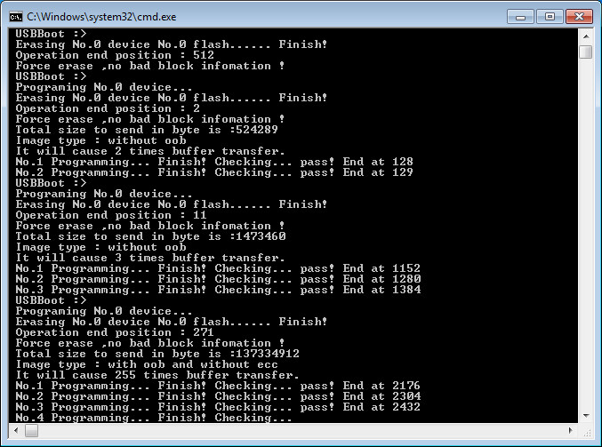
4. 連接USB到電腦並且按下reset按鍵
5. 第一次執行時，系統會掛載mtdblock4分區到電腦
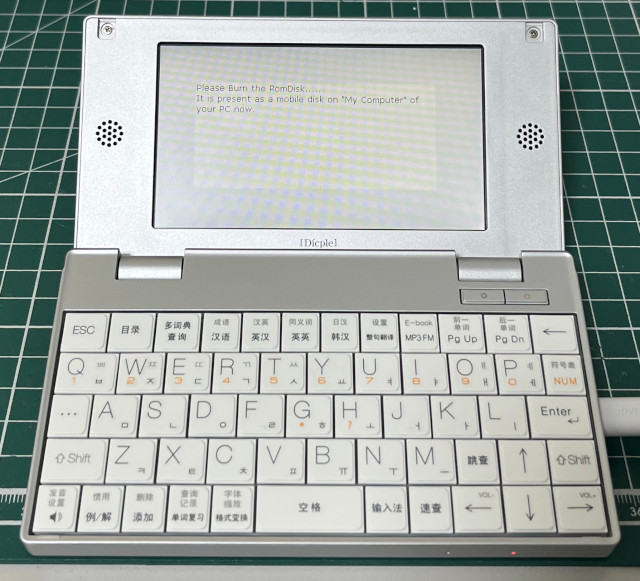
6. 格式化成FAT32(使用Windows系統格式化)
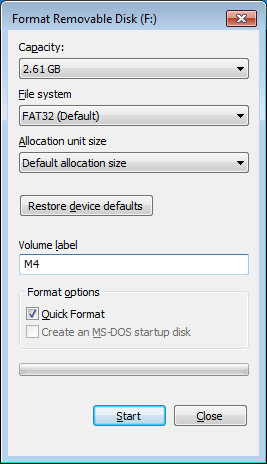
7. 下載https://github.com/steward-fu/website/releases/download/iriver-d88/m4_v1.05.zip並且複製到格式化後的硬碟
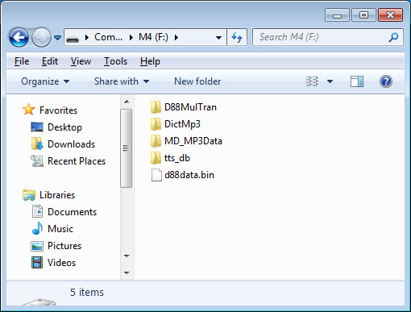
P.S. 大約需要複製20分鐘
8. 拔除USB後，按下reset按鍵
9. 第一次執行會進行電阻屏校正，校正完成後，就可以進入官方系統
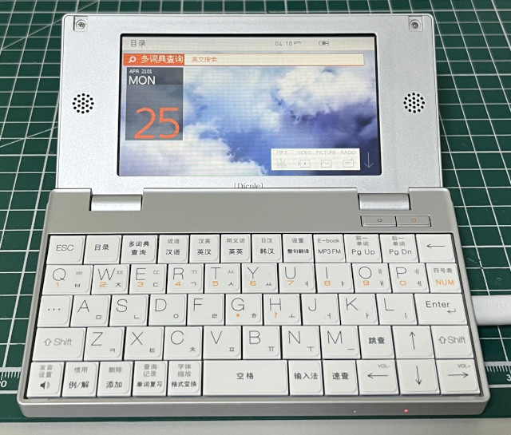
10. 升級到v1.05
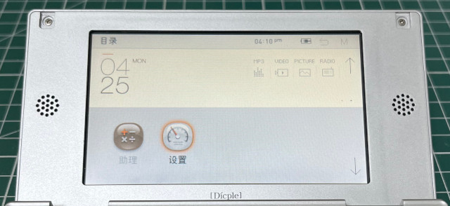
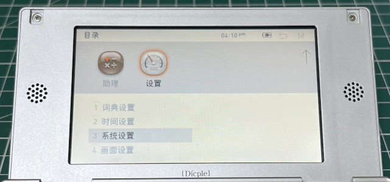
11. 連接USB到電腦後，按下Enter
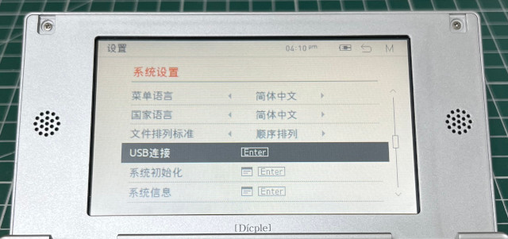
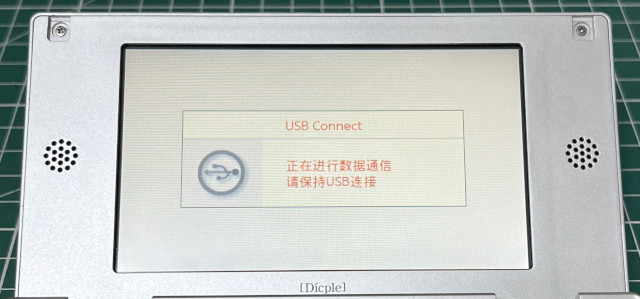
12. 格式化成FAT32(使用Windows系統格式化)
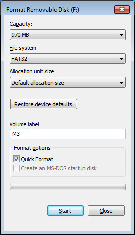
13. 下載https://github.com/steward-fu/website/releases/download/iriver-d88/m3.zip並且複製到格式化後的硬碟
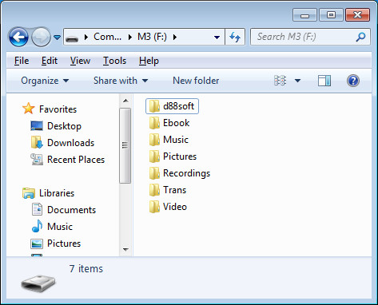
14. 拔除USB後，D88會重新開機，進入系統後，選擇升級
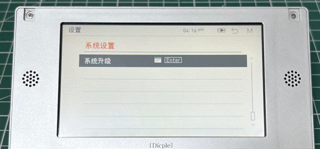
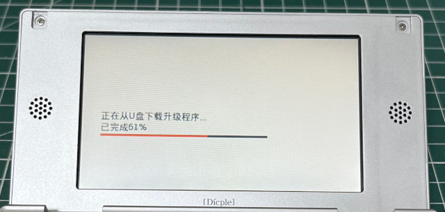
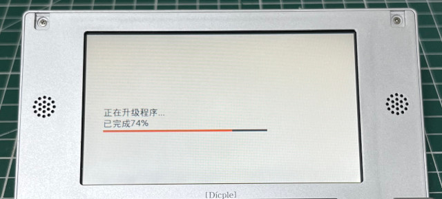
15. 完成
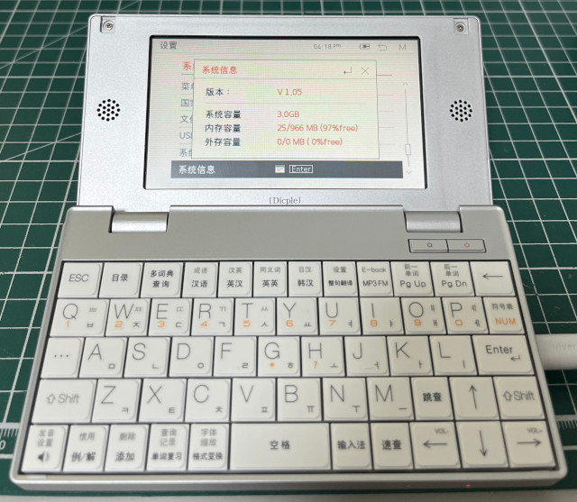